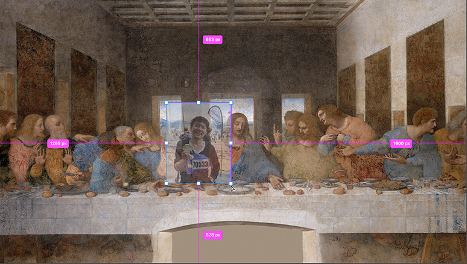

一块屏幕价值几何？如果它是互动的呢？
如果它不仅能体验还值得拍照发票圈呢？
这是一个关于酷栈科技的业务的介绍，也是一篇酷栈从自己互动体验专业出发作出的行业概览——关于业内互动屏幕类型产品的相关设计的概览。各位尊敬的客户也大可把这个当作互动装置的选型指南:)
我们思考的出发点是前面的几个问题，也涉及到诸多观察 - 互动创意科技的普及和体验式经济的热潮。这篇是第二篇：2) 互动数字墙、地板和天花板；第一篇在这里可以找到。
尺度依次递增的几类互动屏幕。
之2) 互动数字墙、地板和天花板；
Interactive and Digital Wall, Floor and Ceiling;
2a) 互动数字墙。
接续上一篇 1) 会动的画和交互的“镜子”，很多案例已经被放大到了墙的尺度。例如酷栈的《不知侬是画中人》之《第十三门徒》, 如果我们将这么一大张“壁画”喷绘或者张贴到整面墙上，而对应显示动态内容的部分用一块隐藏的屏幕去显示实时生成的内容。不失为一个低成本构建数字墙的办法。
《不知侬是画中人之第十三门徒》，2020。周乐。
同理地，其他会动的画比如《听古画在唱歌》也完全可以把画放大到一整张“壁画”的尺度，当屏幕的中的“人”能1比1呈现的时候，效果会更加直接和震撼。
交互的镜子更是如此。事实上前面的几个案例很难去划分到底是镜子还是一面墙：

Quantum Space，2015. Sodazot (Igor Tatarnikov), kuflex.com.

与此同时，互动数字墙还有很多其他类型。一种我定义为CG动态墙（manually-produced CG Animation）；一种是生成视觉墙（Generative Visuals），这一类又可以根据视觉内容的“驱动”方式和参数分为数据驱动视觉、时间驱动视觉（也可以说是算法自己安安静静地美美地生成视觉）和人机互动驱动视觉。
我们先说CG动态墙，这类型通常不互动也不涉及互动体验。其本质是一段制作精良的炫酷动画在空间中以大尺寸的屏幕显示。主要效果和成本都来自这段CG动画的质量和屏幕的投入，更像是大CG行业或者说电影工业的制作技术往空间营造领域的跨界输出。
NEXEN UNIVERCITY "THE INFINITY WALL", APR. 2019. d'strict (三星“大水缸”团队)。
显示屏幕的尺度+内容的构思直接等于现场能营造的体验感，这里最应该学习和总结的一个经验就是——"大力出奇迹"。对于这类纯视觉、作为空间背景板和氛围营造要素的大屏幕，一定要把尺度放到最大；当然，内容如果做不到极致的精细精良精彩，不如不做。当CG内容和呈现形式足够震撼的时候，这类型是不要互动也不需要故事的，真“大力出奇迹”。而与CG动态墙靠人力和资源制作内容对应地，生成视觉墙的视觉内容通常由定制代码和软件实时生成，从CG转到创意编程（Creative Coding）；这里的内容生产方式也是我给他们分类的主要依据。
CG动态和生成视觉当然也可以同时出现，例如在同一大块屏幕上分时段出现。前面的视频中也有一些内容非CG制作而是程序实时生成，例如这几个画面对应的内容：
如果回到我关于“互动体验设计本质是设计人在空间中行为”这个论断，做这么一面数字墙的时候目的到底是什么，非常值得思考。如果是纯粹地需要一面漂亮美丽的视觉背景板作为空间氛围营造的辅助，首先，我们可以确定这里可以抛却互动的形式，而专注于视觉。然后回到酷栈在一面视觉墙上能做的项目上，CG动态墙当前不在酷栈的业务范围内，它的造价、尤其在CG内容制作上的造价太高。相应地，酷栈可以提供生成视觉类的产品，用创意编程去制作实时生成内容。当内容是生成式的，严格意义上它将是一个无穷无尽永不重复的内容，这一点上和CG预制内容重复播放也有相对的现场优势。这里我们先以纯视觉的、不带交互的生成视觉案例——《Generative Digital Signage，2017》 为例说明：
这个为购物中心中庭制作的生成视觉“墙”，严格意义上也有数据驱动的成分；算法直接以时间为输入去生成和用数据驱动更多是讲故事的需要，而不会在呈现形式乃至制作逻辑上有太本质区别。来自法国的bonjour Interactive Lab做的实时视觉受天气数据如亮度、风向和风速驱动，而且视觉风格还可以根据具体主题定制和调整。关于这一类数字墙，内容将是高度可复用的。但问题也将类似，类似的生成视觉短期内可预期效果不差，但是长期很容易审美疲劳。采用这种形式要做长远的计划，如定期更新内容。内容之外，这类型的装置另一大块成本将来自于屏幕硬件的一次性投入。
酷栈将在这类型产品上，快速积累和准备生成视觉内容算法，以供迭代和适配。类似星空的效果可以很容易实现，例如下面酷栈的这个小软件生成的内容可以适配到任何尺寸的屏幕上：
“星空效果生成测试”（时间驱动视觉类）,2020。 周乐。
从内容变装置，需要的只是合理构建空间中的显示介质，屏幕或者投影均可。另外地，通常由数据驱动的装置可以很有意思、有故事可讲，因为它可以跨越物理时空和其他时间和地点产生直接联系——跨越地域“互联”的屏幕们。例如酷栈可以给乡伴做一个装置创意，对乡伴关于城市和乡村的态度做一个艺术向的解读，视觉将类似这样：
515 North State Street, Chicago，2020. AV&C experience design studio.
我们可以把陆家嘴环形天桥的熙熙攘攘的实时影相，生成一幅幅涌动的油画，呈现在另外一个空间和地点上的屏幕上，比如装有这块屏幕的某理想村。抑或是，我们在屏幕里是一个虚拟的数字空间，各个村儿里的人通过摄像头捕捉可以同时进入这个空间并在这里相遇。我原来所在的上纽大交互媒体艺术系就曾尝试做一个实时连接上海和纽约的“互联”屏幕，把上海和纽约的朋友们汇聚一堂：
The Flow Room，2018. by Jiwon Shin, JH Moon and Lisa Jamhoury. Supported by NYU Shanghai & NYU ITP.
如果以工作室的方式工作，酷栈希望输出的是这样的创意，基于我们对技术、对交互体验设计和营造的理解的互动科技创意，而交付形式将是这样的艺术装置。回到互动体验类的数字墙，我们也给几个案例。一类是我们前面提到的镜子类装置放大到墙面的尺寸，观众的动作都被实时的代码程序翻译成绚烂的视觉，而屏幕上的效果又会从视觉维度刺激观众更多的参与，从而构成游戏式的交互体验。
Quantum Space，2015. Sodazot (Igor Tatarnikov), kuflex.com.
另外一类是直接用动作去控制视觉内容，用“参与感”去构建互动体验，teamlab的部分交互内容也属于这一类，把捕捉到的人的动作比如手的位置用以控制实时的生成视觉。
ARKHE，2019. NOHLAB & DECOL.
这个装置逻辑其实简单，把一个定制的软件和它的控制面板——触摸屏整合到整个空间去，加上可反射的天花版和地板，几经反射，一块显示屏幕墙也能构成空间。这也算是一面墙向沉浸式空间过度的一种低成本方式。
The Way of the Sea, Lost Immersed and Reborn，2019. TeamLab.
或者和teamlab的一些项目类似，可以直接把观众和实时视觉的互动用“类触摸屏”的捕捉联系起来。观众的手直接去触发改变生成视觉内容。
2b) 互动地板。
从墙到地板或者天花的逻辑就更加简单了，只是显示界面不同。由于其方向性和屏幕安装问题，天花和地板使用投影将更加合适。

Onde pixel, 2016.voxels productions.
抽象的生成内容可以根据事实的捕捉室内的行人的位置去驱动，类似这样：

互动的地板的逻辑可以很简单，但是结合着物理空间去营造效果可能出乎意料的好。这个形式也有它自己的名字叫做Projection Mapping - 光雕投影，比如 Nohlab 给 World Government Summit 2019做的这个中东政府项目，而且这个还是没有互动的版本效果依然很不错。teamLab的某些展览也同理，主要以地板上的视觉为主，辅以镜面的墙壁构造空间。按照这类项目的模式，“声光电”的部分投入主要在内容制作和地板投影，酷栈也将很乐意负责内容和“声光电”的部分的制作、并和空间营造团队合作。
Edge of Government ，2019. NOHLAB。

Moving Creates Vortices and Vortices Create Movement. 2017. TeamLAB。
如果从低成本（但效果不打折扣）考虑，天花的投入通常可以是最小的。例如像前面这个项目一样，天花板上的几何构建做为“投影幕”，局部做内容。或者更简单的用镜面靠反射去构建空间感抑或是留白，但如果把重心放在头顶这片空间，我们也有一些其他好玩儿选择。例如用帷幔+深度捕捉传感器的这个项目，头顶的帷幔既是投影幕布又是触摸交互界面，而这里的触摸由顶部安装的深度摄像头直接捕捉，而不需要使用特别的帷幔材质。当然，我们也可以把这里的帷幔旋转90度，像窗帘一样悬挂；能实现的交互和视觉效果同理不变。
Supernova ，2019. Aart Odding
酷栈的“互动数字墙、地板和天花板”。
互动和生成（Interactive and Generative）有着天生的数字基因并自然而然地紧密联系。互动的逻辑是读取物理世界的数据并传送给数字世界、以期待数字世界经过某种处理再把结果信号返还回物理世界；而生成是拿参数、数据作为起点按照某种设计过的逻辑或者算法去生成内容，互动+生成的设计即是完成一整个信息的从物理到数字再到物理世界的闭环流转。
关于涉及到房间尺寸的视觉内容的装置产品，酷栈的兴趣和未来的发展,也将可能紧扣互动和生成这两个关键词。前面的提到的这些关于互动数字墙和地板的视觉创意，除了CG动态墙属于另外一个技术线、不在酷栈的考量范围内以外，其他全部都是相对成型的数字交互艺术创作手段，也都是酷栈可以做的。
酷栈在这里可以有两种模式，一是提供可复用的产品 - 以代码生成视觉为主要内容形式的交互（或者不交互的）地板、背景墙，或者镜子型的交互墙；复用的同时，可以在视觉呈现如颜色、抽象图案元素上做适配性调整，结合着空间营造的前提下可以相对小的投入却收获不错的效果（见Edge of Government，2019案例）。另一类是在我在涉及“数据驱动交互视觉”提到的，酷栈可以提供完全定制的艺术装置创意+实现；用科技或者人工智能创作的艺术装置，这也是我的本行。
从一幅画和一面镜子的尺度到墙、地板和天花板，这个线索的意图很明显。下一篇将是“沉浸式空间”，当我们把这些带有互动视觉内容的墙、地板围合起来可不就是“沉浸式空间”嘛。